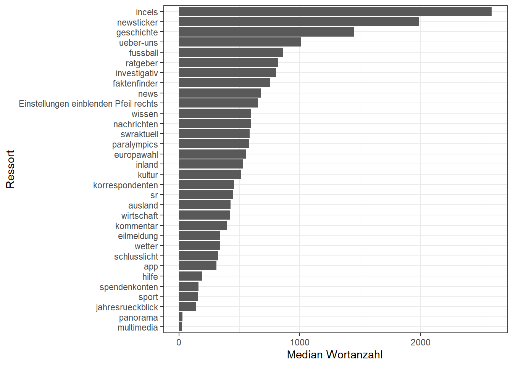

Viele Variablen im Tagesschau-Datensatz sind kategorial: ressort, language, author, manchmal auch tag oder supertitle. In R werden solche Kategorien häufig als Faktoren (factors) dargestellt. Ein Faktor ist im Kern ein Vektor mit festen Ausprägungen (levels). Das ist in der Datenanalyse nützlich, weil
Grafiken und Tabellen automatisch sinnvoll gruppieren,
eine feste Reihenfolge der Kategorien reproduzierbar ist,
Modelle kategoriale Merkmale korrekt behandeln können.
Im Tidyverse ist forcats (Teil von tidyverse) das Werkzeug für Faktor-Operationen.
4.1 Überblick: Welche Variablen sind gute Faktoren?
Ein schneller Check ist: Welche Spalten sind Text (<chr>) und haben eher wenige unterschiedliche Werte?
Für eine Visualisierung ist es hilfreich, ressort als Faktor zu nutzen und nach Häufigkeit zu ordnen.
ressort_counts |>filter(!is.na(ressort)) |>mutate(ressort =fct_reorder(ressort, n)) |>ggplot(aes(x = ressort, y = n)) +geom_col() +coord_flip() +theme_bw() +labs(x ="Ressort", y ="Anzahl der Beiträge")
Warum ist das nützlich?
Du erkennst sofort, welche Ressorts dominieren (wichtig für Stichproben, Bias, Gewichtung).
Viele weitere Analysen (Zeitreihen, Textfeatures) lassen sich sinnvoll nach Ressort splitten.
4.3 Zu viele Kategorien: Lumpen (seltene Werte zusammenfassen)
Bei Kategorien wie author gibt es oft sehr viele Ausprägungen. Für Auswertungen und Plots ist es dann sinnvoll, seltene Werte in Other zusammenzufassen.
# Top-Autor:innen + Other# (Falls author sehr oft NA ist: NAs explizit als Kategorie behandeln)ts |>mutate(author =fct_explicit_na(author, na_level ="(fehlend)"),author =fct_lump_n(author, n =15) ) |>count(author, sort =TRUE)
# A tibble: 16 × 2
author n
<fct> <int>
1 Other 20487
2 tagesschau.de 19926
3 (fehlend) 16625
4 Kai Küstner 387
5 Martin Bohne 207
6 Silvia Stöber 201
7 Stephan Ueberbach 185
8 Helga Schmidt 184
9 Ralph Sina 182
10 Jakob Mayr 177
11 Karin Bensch 177
12 Patrick Gensing 176
13 Frank Bräutigam 157
14 Angela Göpfert 149
15 Christoph Prössl 148
16 Jan-Christoph Kitzler 132
Das ist ein typischer Schritt in der Datenanalyse:
reduziert visuelle Unordnung,
verhindert, dass „Einzelfälle“ die Story dominieren,
stabilisiert Modelle (zu viele Kategorien führen sonst schnell zu Overfitting).
4.4 Sinnvolle Reihenfolgen: Faktoren nach Kennzahlen ordnen
Ein Faktor muss nicht alphabetisch sortiert sein. Häufig willst du Kategorien nach einer analytischen Kennzahl ordnen.
Beispiel: Welche Ressorts haben im Median die längsten Texte (über word_count)?
ressort_wordcount |>mutate(ressort =fct_reorder(ressort, median_word_count)) |>ggplot(aes(x = ressort, y = median_word_count)) +geom_col() +coord_flip() +theme_bw() +labs(x ="Ressort", y ="Median Wortanzahl")

So ein Plot ist ein guter Einstieg, um Hypothesen zu formulieren (z.B. „Politikartikel sind länger als Sportmeldungen“).
4.5 Kategorien bereinigen: Recoding und Missingness sichtbar machen
Oft sind Kategorien „nicht sauber“: unterschiedliche Schreibweisen, leere Strings, oder NAs. Für Analytics ist es wichtig, diese Fälle bewusst zu behandeln.
Beispiel: language sollte im Datensatz meistens de sein.
Faktoren entstehen nicht nur aus Textspalten. Gerade Zeitstempel werden in Analytics oft in kategoriale Einheiten transformiert, um Muster sichtbar zu machen.
# Wochentag (deutsche Labels) und Stunde# Hinweis: base::weekdays() hängt von der Locale ab; daher nutzen wir lubridate::wday()ts |>mutate(weekday =wday(date_time, label =TRUE, abbr =FALSE, week_start =1),hour =hour(date_time) ) |>count(weekday, sort =TRUE)